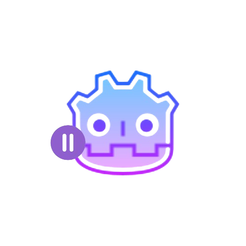

YetAnotherMenu_godot
Yet Another Menu is a plugin for Godot Engine that automatically generates a fully customizable Pause Menu scene directly from the editor. It allows developers to quickly create a functional and flexible pause menu without manual setup.
Key Features
- Dedicated editor dock displayed when the plugin is activated
- Automatic generation of a customizable Pause Menu scene
- Enable or disable individual menu elements:
- Volume option
- Game title (custom name)
- Window mode
- Resolution (window resolution)
- Vertical synchronization (VSync)
- Back button
- Return to main menu button
- Quit game button
- Custom scene name (default:
pause_menu.tscn)
Installation
- Download or clone the plugin folder:
yet_another_menu/ - Copy it into
res://addonsin your project - Open the project in Godot
- Go to Project → Project Settings → Plugins
- Activate the Yet Another Menu plugin
Once activated, a dock automatically appears in the editor, allowing quick configuration and generation of the pause menu scene.
Usage
- Activate the plugin from the Plugins menu
- Select the menu elements to include from the dock
- Enter the name of the scene to generate
- If no name is provided,
pause_menuis used by default - If a scene with the same name already exists in
res://, it will be replaced
- If no name is provided,
- Click the Generate Menu button
- The scene is automatically created and can be edited immediately
-
To enable the Main Menu button, drag the generated
.tscnscene into the Main Menu field in the inspector
🔗 View the source code on GitHub
🧩
View on the Godot Asset Library